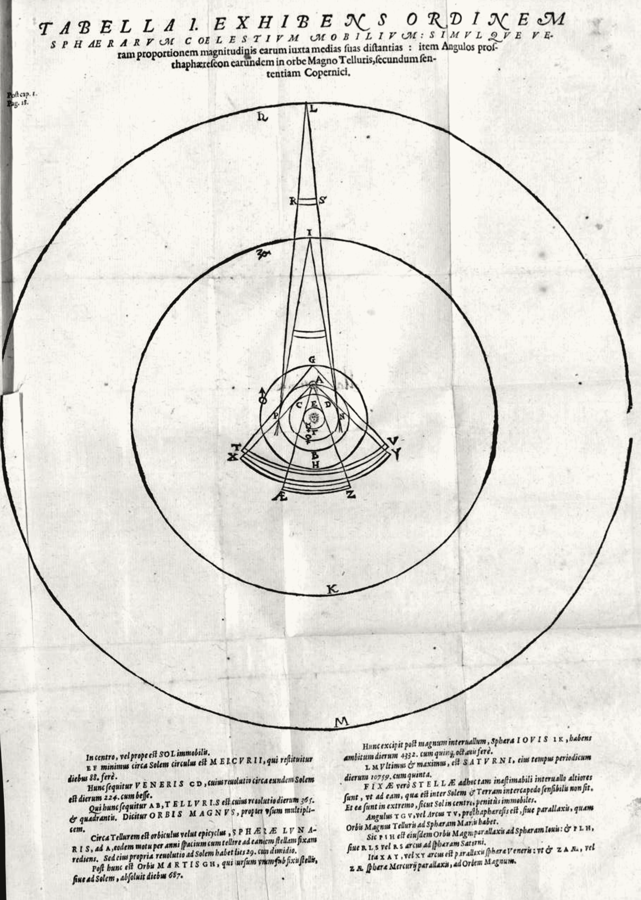
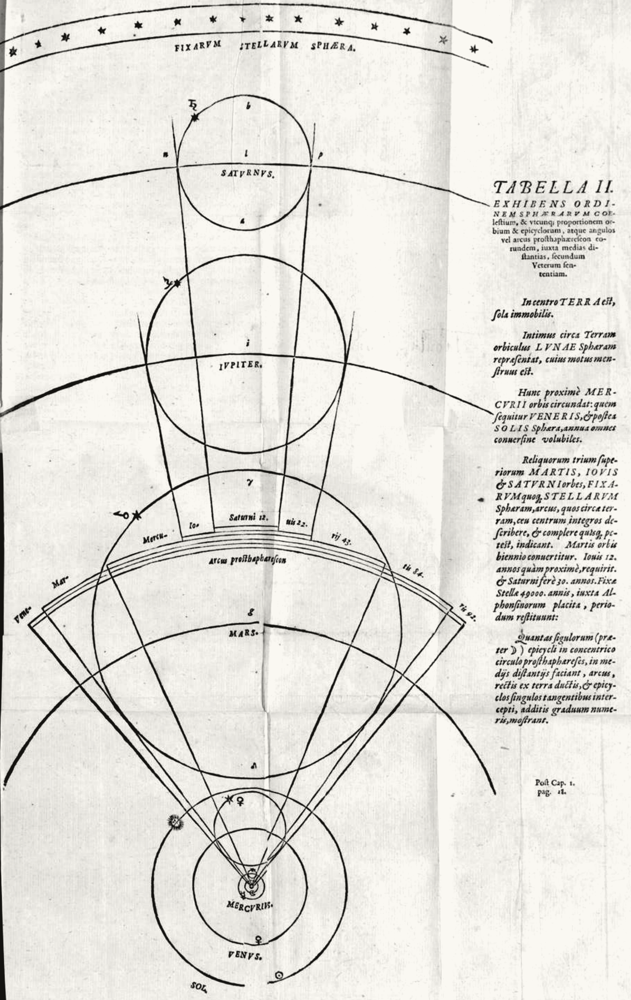

Chapter I: Why Copernicus’s Hypotheses Agree with the Heavens¶
f. 0026 · Tabella I f. 0027 · Tabella IIBefore unfolding the polyhedral secret of the cosmos, Kepler establishes why the heliocentric hypotheses of Nicolaus Copernicus (De revolutionibus, 1543) deserve full physical assent rather than dismissal as a mere calculating fiction. While reverently affirming that nothing in his physical inquiry intends injury to Sacred Scripture, he rejects the scholastic commonplace that false premises might perpetually yield true celestial appearances. An accidental syllogism may stumble upon a single truth, yet when tested across every interconnected phenomenon, falsehood betrays itself unless propped up by endless ad hoc assumptions.
Copernicus alone removes the root of astonishment—ignorance of causes—by explaining naturally what Ptolemaic and Alphonsine epicycles merely posit as brute coincidence:
Retrograde loops and planetary brilliance: The annual motion of Earth’s Orbis Magnus around the stationary Sun directly accounts for the retrograde arcs, stations, and heightened brightness of Mars, Jupiter, and Saturn at opposition, as well as the bounded solar elongations of Venus and Mercury.
Elimination of redundant epicycles: What Ptolemy distributes across separate annual epicycles of identical period on every planet collapses in Copernicus into a single common cause—Earth’s annual revolution.
True ordering and commensurable distances: Whereas ancient geocentric diagrams leave the relative sizes of planetary spheres indeterminate, heliocentric parallax fixes the ratios of all six planetary distances directly from observation, as Kepler contrasts visually in Tabella I (Copernican heliocentric orbs cSAT, cJUP, cMAR, cTER, cVEN, cMER around the Sun Sol, with tangent parallax cones from Saturn L, Jupiter I, and Mars G to Earth’s Orbis Magnus A) and Tabella II (ancient geocentric epicycles cSATep, cJUPep, cMARep, cVENep, cMERep and nested Arcus prosthaphaereseon arcSAT, arcJUP, arcMER, arcMAR, arcVEN centered on immobile Terra).




For readers lacking leisure to study De revolutionibus in full, Kepler urges reading Georg Joachim Rheticus's Narratio Prima (1540 / 1596), appended by Michael Mästlin directly to this Tübingen volume.